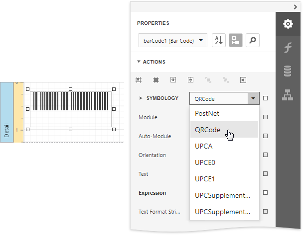

Add Controls to a Report
Add Report Controls
To display a data field's value in your report, drag the corresponding item from the Field List and drop it onto the report's detail band. This creates a new report control bound to the corresponding field.
You can also use the Toolbox to add other controls to your report and display content such as text, images, charts, barcodes, and so on.
This document describes how to add the most commonly used controls to a report. See Use Report Elements for a complete list of available controls.
Display Text
Use the following controls to display text in a report:
-
Displays plain text in a report.
-
Displays rich text in a report. You can apply different font settings to the control's content and load content from an external HTML file.

-
Contains any number of cells arranged in one or more rows. Each table cell can display plain text or contain other controls.
-
Displays each character in a separate cell and can be used to create printed forms.
Double-click any of these controls to invoke an in-place editor where you can enter text.
Press CTRL+Enter to submit changes and close this mode.
You can use corresponding properties of the Appearance category to access the selected control's font and alignment settings.

Labels and other text-oriented controls can display the following content:
Static content
A control's content does not change once it is specified in a published document.

Dynamic content
A connected data source supplies this content. In a published document, it changes according to the printed data source record.
You can use the Format String Editor to format dynamic content.
Mixed content
You can combine labels' and other text-oriented controls' static and dynamic content within the same control.
Use the Format String property in the Action category to format this field's value.
Display Page Information
Use the Page Info control to display information about document pages, such as the current page number and/or total number of pages.
You can also use this control to add information about a report's author and the document's creation date.
See the following tutorials for detailed instructions:
Display Check Boxes, Images and Barcodes
Drop a Boolean data field from the Field List onto a report to create a Check Box control bound to that field.
Check boxes can display different states depending on the underlying data values.

Use the Picture Box control to display images in a report. You can load an image from an external file, from a bound data source, or from a web location using the specified URL.
To display barcodes, use the Barcode control.

Drawing Lines and Shapes
Use the Shape control to draw simple graphics in a report (circles, crosses or arrows).
The Line control enables you to draw straight or slanted lines in a single band.
The Cross-Band Line and Box controls enable you to draw lines and boxes spanning multiple report bands.